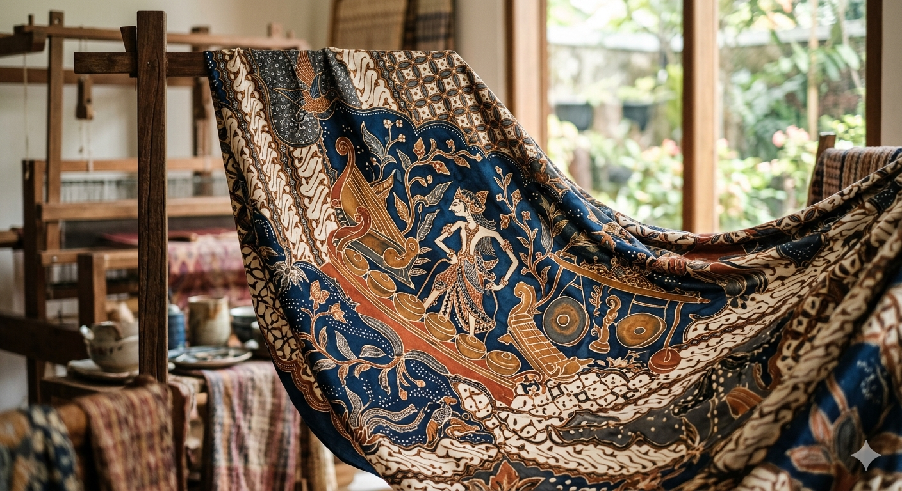
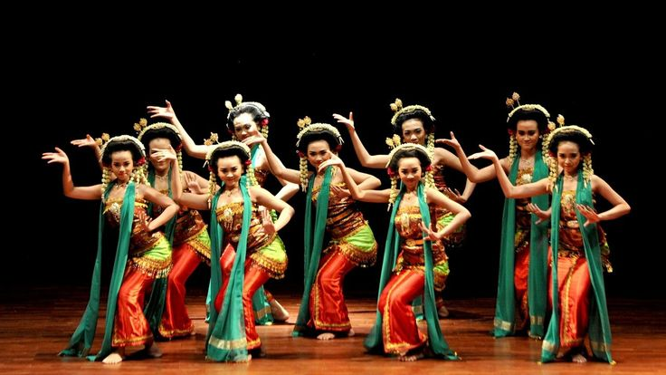
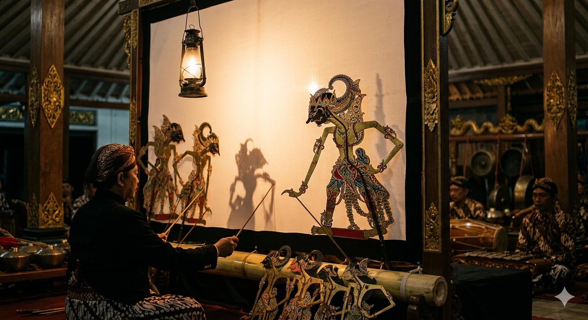
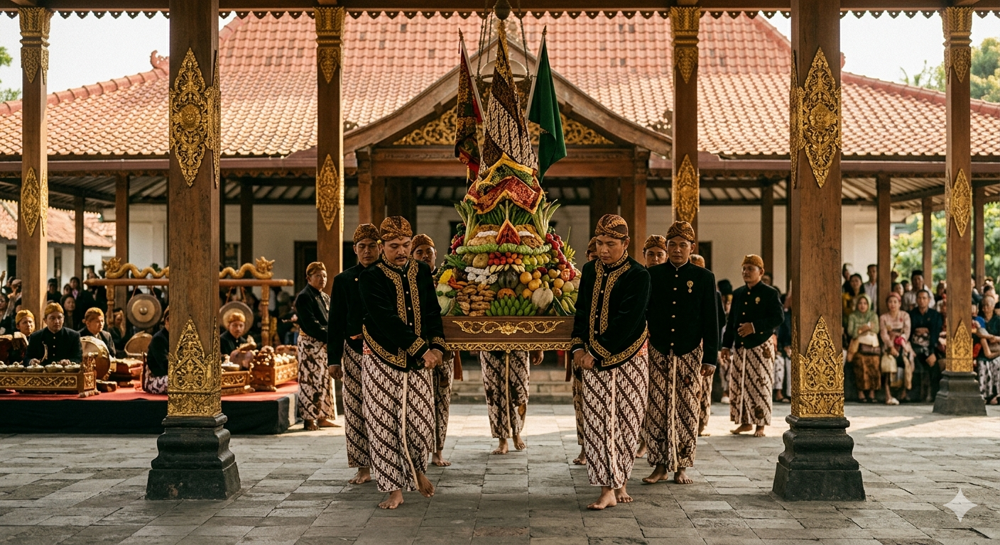

Menjelajahi Warisan Adiluhung
Budaya Jogja
Warisan budaya Mataram yang abadi, mengalir dalam setiap nafas kehidupan Yogyakarta
Warisan Adiluhung
Tanah Mataram
Yogyakarta, kota yang menyimpan ribuan cerita dalam setiap sudutnya. Dari gemulai tarian klasik yang mengalun di pendopo keraton, hingga suara gamelan yang menggetarkan jiwa di malam-malam pertunjukan wayang. Di sini, budaya bukan sekadar warisan masa lalu - ia adalah nafas kehidupan yang terus mengalir, menghubungkan generasi demi generasi dalam untaian tradisi yang tak lekang oleh waktu.
Setiap helai batik menyimpan filosofi, setiap gerakan tari mengandung makna, dan setiap upacara adat menjadi jembatan antara manusia dengan alam semesta. Mari kita jelajahi kekayaan budaya yang menjadi jiwa dari Kota Istimewa ini.
Empat Pilar Budaya

Batik
Seni membatik Yogyakarta merupakan warisan budaya tak benda UNESCO. Setiap motif menyimpan filosofi mendalam tentang kehidupan, alam, dan spiritualitas Jawa yang telah diwariskan turun-temurun sejak era Kerajaan Mataram.
Jelajahi
Tarian Adat
Tarian klasik Yogyakarta seperti Bedhaya, Serimpi, dan Golek Menak merupakan ekspresi keindahan jiwa jawa. Setiap gerakan halus penuh makna simbolis yang menggambarkan keanggunan dan kehalusan budi pekerti.
Jelajahi
Wayang
Wayang kulit Yogyakarta adalah teater bayangan yang memukau, menghidupkan kisah-kisah epik Ramayana dan Mahabharata. Dalang sebagai sutradara tunggal mengendalikan puluhan karakter dalam semalam penuh pertunjukan.
Jelajahi
Upacara Adat
Upacara adat Yogyakarta seperti Sekaten, Grebeg Maulud, dan Labuhan merupakan ritual sakral yang menghubungkan manusia dengan Sang Pencipta. Tradisi ini menjadi simbol keharmonisan antara dunia lahir dan batin.
JelajahiJogja Istimewa,
Budaya Abadi
Di tengah arus modernisasi yang tak terbendung, Yogyakarta tetap teguh menjaga warisan leluhurnya. Keraton Ngayogyakarta Hadiningrat sebagai penjaga tradisi, tempat di mana tata krama, seni, dan spiritualitas Jawa terus dilestarikan dengan penuh kekhidmatan.
Keistimewaan Yogyakarta bukan hanya terletak pada status politiknya, melainkan pada kekayaan budaya yang hidup dan bernafas di setiap sudut kota. Dari pasar tradisional hingga galeri seni kontemporer, dari pendopo keraton hingga panggung-panggung pertunjukan modern - budaya Mataram terus berevolusi tanpa kehilangan esensinya.
"Hamemayu Hayuning Bawana"- Memperindah keindahan dunia, filosofi hidup masyarakat Yogyakarta